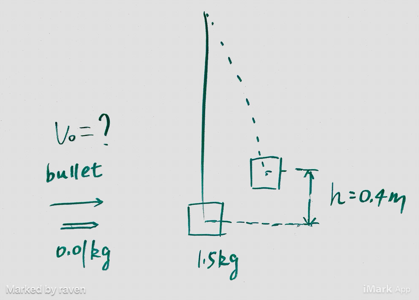

(Mid Term 2) A bullet of mass 0.01kg moving horizontally strikes a block of mass 1.5kg which is suspended as a pendulum. The bullet lodges in the wood, and together they swing upward a distance of 0.40m. What was the velocity of the bullet just before it stuck the wooden block? The length of the string is 2 meters.

Solution
Todo